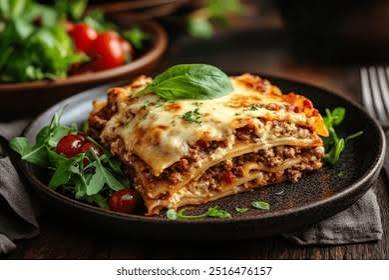

Lasagna
Home

Chicken Lasagna
This easy lasagna features jarred spaghetti sauce for easy layering and rich tomato flavor.
Reviewers love using cream cheese instead of ricotta for a rich, creamy texture.
Ingredients
- 6 uncooked lasagna noodles
- 3 skinless, boneless chicken breast halves
- 2 cups shredded mozzarella cheese, divided
Steps
- Gather all ingredients. Preheat the oven to 350 degrees F (175 degrees C).
- Bring a large pot of lightly salted water to a boil. Cook lasagna noodles in boiling water, stirring occasionally, until tender yet firm to the bite, about 8 minutes. Drain, rinse with cold water, and set aside.
- Meanwhile, place chicken in a large saucepan with enough water to cover; bring to a boil. Cook until chicken is no longer pink and the juices run clear, about 20 minutes. Remove chicken from the saucepan and shred.